AlphaFold 쌩초보 가이드(?)#
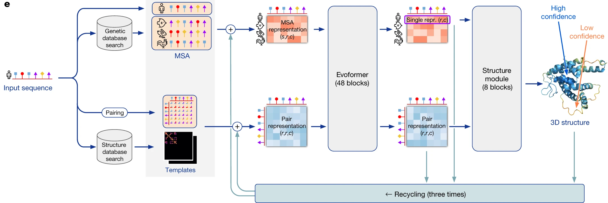
준비물#
기계 준비하기#
- Linux가 설치된 AMD64 CPU가 설치된 computer.
- Intel Core seriers, Xeon series, ...
- AMD Ryzen, EPYC, ...
- NVIDIA GPU가 필요함.
- High-end gaming GPUs: RTX 3090, RTX 4090
- Data center GPUs: V100, A100, ...
- Git과 Python 3이 설치되어 있어야 함.
발표자의 기계#
- AMD Ryzen 9 7950X
- ASUS ProArt X670E-CREATOR WIFI
- SK하이닉스 DDR5-5600
- GIGABYTE Geforce RTX 4090 Gaming OC D6X 24GB
- SK하이닉스 Platinum P41 M.2 NVMe (500GB)
Docker Engine#
Docker는 무엇인가#
- Docker는 환경을 분리하여 리소스를 관리하고 의존성 문제를 해결하는 solution임.
- Software engineering에서 절찬리 사용중 (2023년 기준)
- 이곳에 Linux 배포판 별로 설치 방법이 상세하게 작성되어 있음.
- Google이 매우 잘 활용하고 있으므로 AlphaFold도 Docker 기반으로 배포되고 있음.
설치하기#
- OS는 Linux만 가능함.
- 배포판은 Ubuntu, REHL 같은 유명한 것은 가능함.
- Superuser 권한이 필요함.
- Ubuntu 22.04 LTS기준으로 설명함.
Apt는 Ubuntu와 같은 Debian 계통 배포판에서 사용되는 (Apple의 앱스토어 같은) 패키지 관리자임. 다음은 APT에 Docker의 저장소를 등록하는 과정임.
# Add Docker's official GPG key:
sudo apt-get update
sudo apt-get install -y ca-certificates curl gnupg
sudo install -m 0755 -d /etc/apt/keyrings
curl -fsSL https://download.docker.com/linux/ubuntu/gpg | sudo gpg --dearmor -o /etc/apt/keyrings/docker.gpg
sudo chmod a+r /etc/apt/keyrings/docker.gpg
# Add the repository to Apt sources:
echo \
"deb [arch="$(dpkg --print-architecture)" signed-by=/etc/apt/keyrings/docker.gpg] https://download.docker.com/linux/ubuntu \
"$(. /etc/os-release && echo "$VERSION_CODENAME")" stable" | \
sudo tee /etc/apt/sources.list.d/docker.list > /dev/null
sudo apt-get update
Docker Engine을 받아와서 설치함.
sudo apt-get install -y docker-ce docker-ce-cli containerd.io docker-buildx-plugin docker-compose-plugin
다음을 실행했을 때 아래와 같이 출력되면 성공!
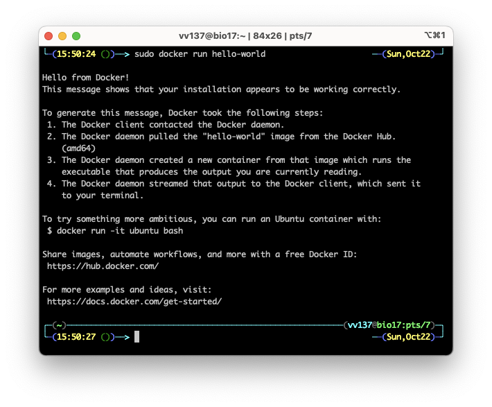
Root 권한 없이 Docker 사용하기#
- Docker는 기본적으로 실행에 root 권한이 필요함.
- 특정 사용자에게 Docker의 사용 권한을 부여할 수 있음.
$USER를 권한을 부여할 사용자의 이름으로 변경하여 다음을 실행하면 사용자가 등록됨.
NVIDIA Contatiner Toolkit#
- Docker container 내부에서 GPU를 사용하기 위해서 필요한 toolkit임.
- System에 반드시 CUDA driver가 설치되어 있어야 작동함.
- 이곳을 참조하여 driver를 설치하면 됨. (생략)
- 이곳 다른 배포판에 관하여 설명되어 있음.
Apt에 저장소 등록하기.
curl -fsSL https://nvidia.github.io/libnvidia-container/gpgkey | sudo gpg --dearmor -o /usr/share/keyrings/nvidia-container-toolkit-keyring.gpg \
&& curl -s -L https://nvidia.github.io/libnvidia-container/stable/deb/nvidia-container-toolkit.list | \
sed 's#deb https://#deb [signed-by=/usr/share/keyrings/nvidia-container-toolkit-keyring.gpg] https://#g' | \
sudo tee /etc/apt/sources.list.d/nvidia-container-toolkit.list \
&& \
sudo apt-get update
Apt로 패키지 설치하기.
다음을 실행해서 Docker에서 CUDA를 사용할 수 있도록 설정함.
sudo nvidia-ctk runtime configure --runtime=docker
sudo systemctl restart docker
sudo nvidia-ctk runtime configure --runtime=containerd
sudo systemctl restart containerd
sudo nvidia-ctk runtime configure --runtime=crio
sudo systemctl restart crio
다음을 실행했을 때 장착된 장비의 정보가 출력되면 성공한 것임.
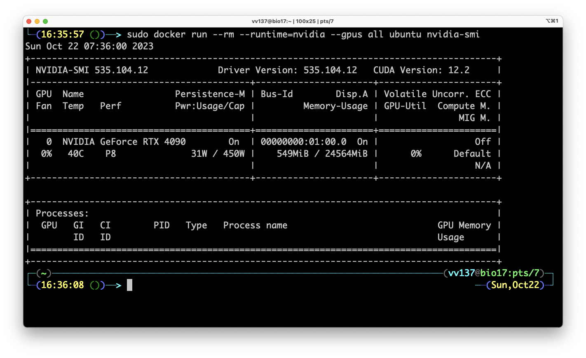
AlphaFold 설치하기#
AlphaFold Git 저장소 받아오기#
Database와 parameter 받아오기#
- Database를 받아오려면
aria2c가 필요함. (sudo alt install aria2로 설치함.) - 모든 database를 download하면 대략 2.62 TB의 공간이 필요함.
$DOWNLOAD_DIR를 file을 저장할 directory로 변경하고 다음을 실행함.- 인내심과 큰 공간이 필요함. (하루는 잡고 기다려야함.)
- Download 중에 연결이 끊어진 경우
scripts/directory에 있는 개별 항목을 받아오는 script를 실행하면 이어받기가 됨.
- 모두 받으면 다음과 같음.
$DOWNLOAD_DIR/ # Total: ~ 2.62 TB (download: 556 GB)
bfd/ # ~ 1.8 TB (download: 271.6 GB)
# 6 files.
mgnify/ # ~ 120 GB (download: 67 GB)
mgy_clusters_2022_05.fa
params/ # ~ 5.3 GB (download: 5.3 GB)
# 5 CASP14 models,
# 5 pTM models,
# 5 AlphaFold-Multimer models,
# LICENSE,
# = 16 files.
pdb70/ # ~ 56 GB (download: 19.5 GB)
# 9 files.
pdb_mmcif/ # ~ 238 GB (download: 43 GB)
mmcif_files/
# About 199,000 .cif files.
obsolete.dat
pdb_seqres/ # ~ 0.2 GB (download: 0.2 GB)
pdb_seqres.txt
small_bfd/ # ~ 17 GB (download: 9.6 GB)
bfd-first_non_consensus_sequences.fasta
uniref30/ # ~ 206 GB (download: 52.5 GB)
# 7 files.
uniprot/ # ~ 105 GB (download: 53 GB)
uniprot.fasta
uniref90/ # ~ 67 GB (download: 34 GB)
uniref90.fasta
Docker image 생성하기#
- 다음 명령으로 AlphaFold docker image를 생성함.
- 꽤 오래 걸리는 작업임 (10-20분 정도 소요).
- (2023-10-22) Ada Lovelace (RTX 4000 series)를 사용하려면
docker/Dockerfile을 수정해야함.
docker/Dockerfile
--- a/docker/Dockerfile
+++ b/docker/Dockerfile
@@ -12,7 +12,7 @@
# See the License for the specific language governing permissions and
# limitations under the License.
-ARG CUDA=11.1.1
-FROM nvidia/cuda:${CUDA}-cudnn8-runtime-ubuntu18.04
+ARG CUDA=11.8.0
+FROM nvidia/cuda:${CUDA}-cudnn8-devel-ubuntu18.04
# FROM directive resets ARGS, so we specify again (the value is retained if
# previously set).
@@ -53,13 +53,13 @@ RUN wget -q -P /tmp \
# Install conda packages.
ENV PATH="/opt/conda/bin:$PATH"
-RUN conda install -qy conda==4.13.0 \
- && conda install -y -c conda-forge \
- openmm=7.5.1 \
- cudatoolkit==${CUDA_VERSION} \
+# RUN conda install -qy conda==23.7.2 \
+RUN conda install -y -c conda-forge \
+ openmm=7.7.0 \
+ cudatoolkit=${CUDA_VERSION} \
pdbfixer \
pip \
- python=3.8 \
+ python=3.9 \
&& conda clean --all --force-pkgs-dirs --yes
COPY . /app/alphafold
@@ -70,13 +70,13 @@ RUN wget -q -P /app/alphafold/alphafold/common/ \
RUN pip3 install --upgrade pip --no-cache-dir \
&& pip3 install -r /app/alphafold/requirements.txt --no-cache-dir \
&& pip3 install --upgrade --no-cache-dir \
- jax==0.3.25 \
- jaxlib==0.3.25+cuda11.cudnn805 \
+ jax==0.4.13 \
+ jaxlib==0.4.13+cuda11.cudnn86 \
-f https://storage.googleapis.com/jax-releases/jax_cuda_releases.html
# Apply OpenMM patch.
-WORKDIR /opt/conda/lib/python3.8/site-packages
-RUN patch -p0 < /app/alphafold/docker/openmm.patch
+# WORKDIR /opt/conda/lib/python3.9/site-packages
+# RUN patch -p1 < /app/alphafold/docker/openmm.patch
# Add SETUID bit to the ldconfig binary so that non-root users can run it.
RUN chmod u+s /sbin/ldconfig.real
- 다음과 같은 출력이 나오면 인내심을 갖고 기다려봅시다.
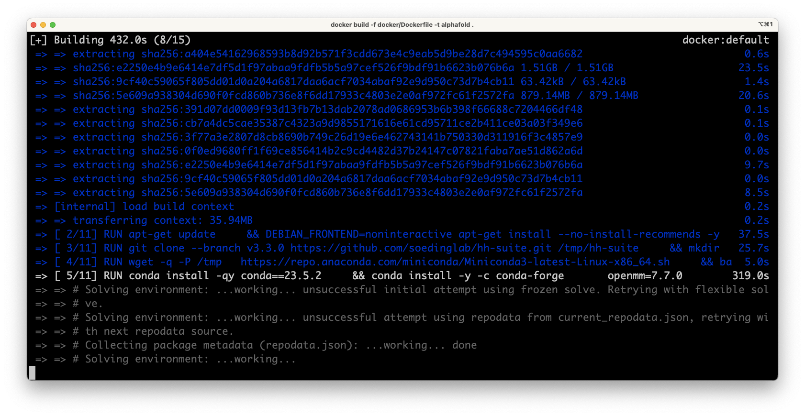
Python dependency 설치하기#
- 이왕이면 Python virtual environemnt이나 Conda와 같은 방법으로 의존성 관리를 하는 것이 권장됨.
- 다음 명령을 실행하여 필요한 Python 패키지를 설치한다.
- (2023-10-22) 다음을 실행하여 기본으로 설치되는 패키지의 버전을 변경해야함.
입력 준비하기#
- 단백질의 서열은 FASTA format으로 입력받음.
실행하기#
- Clone된 AlahaFold repository가 저장된 directory에서 다음을 실행함.
$FASTA_PATH에는 예측한 서열을 담은 FASTA 형식의 입력 file의 경로를 넣음.$OUTPUT_DIR에는 예측 결과를 저장할 directroy의 경로를 넣음.$DOWNLOAD_DIR에는 위에서 download한 database의 경로를 넣음.
python3 "docker/run_docker.py" \
--fasta_paths="$FASTA_PATH" \
--max_template_date="2022-01-01" \
--model_preset="monomer" \
--db_preset=full_dbs \
--data_dir="$DOWNLOAD_DIR" \
--output_dir="OUTPUT_DIR"
- Multimer의 경우 다음과 같이 여러 서열이 들어간 FASTA를 작성하고 preset을 변경하면됨.
python3 "docker/run_docker.py" \
--fasta_paths="$FASTA_PATH" \
--max_template_date="2022-01-01" \
--model_preset="monomer" \
--db_preset=full_dbs \
--data_dir="$DOWNLOAD_DIR" \
--output_dir="OUTPUT_DIR"
결과 분석하기#
AF-Pipeline#
AlphaFold는 다음과 같은 과정으로 이루어짐.
- 전처리 (Database search)
- 추론 (Recycling)
- Energy 최적화 (with Amber ff99SB)
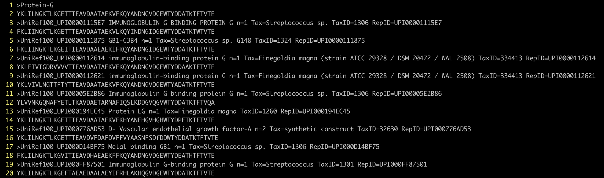
MSA search results.
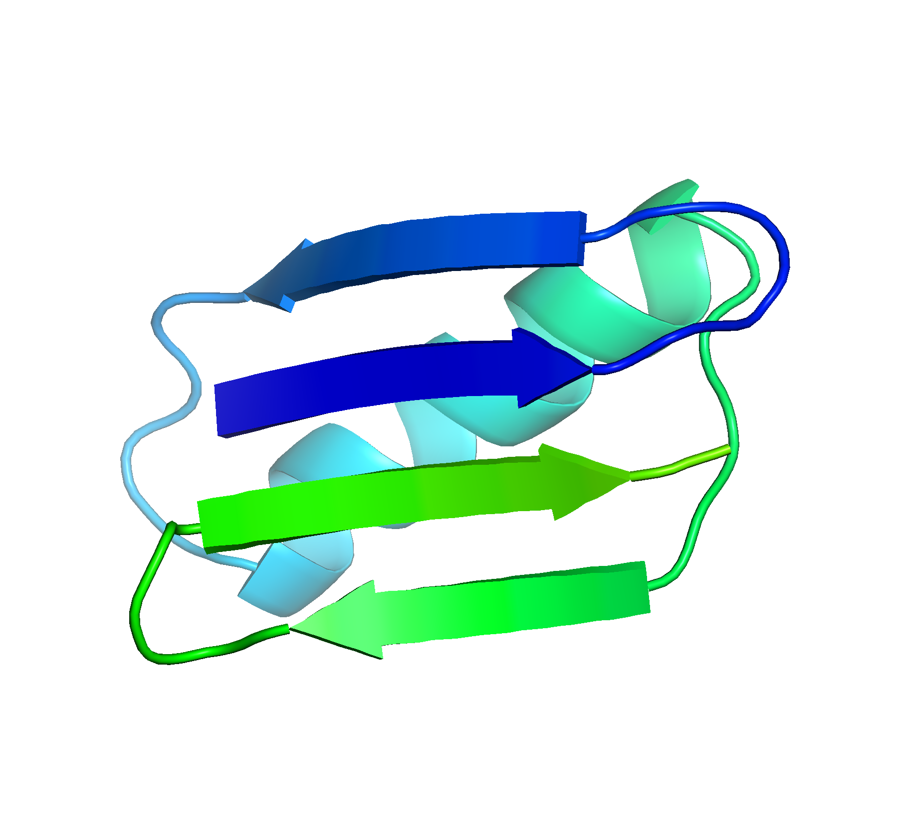
An unrelaxed prediction.
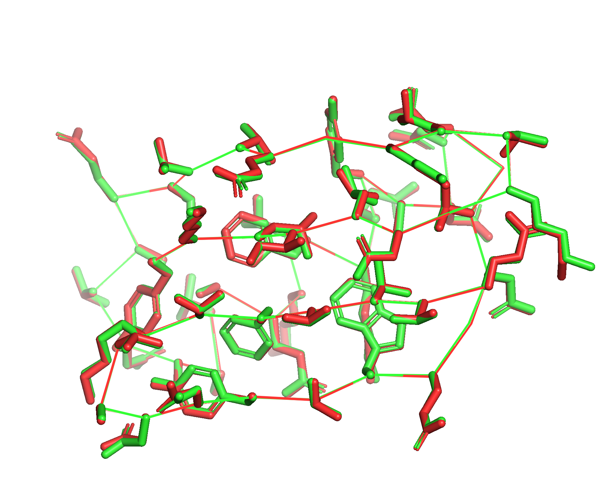
After relaxation.
Outputs#
- 예측된 model은 PDB 또는 mmCIF 형식으로 출력됨.
- PyMOL, VMD, Chiemera 등으로 시각화 가능함.
- AlphaFold는 자체적인 정확도 예측 점수를 출력함.
% Database query result
msas/
% Self-confidence predictions
confidence_model_1_pred_0.json
confidence_model_2_pred_0.json
confidence_model_3_pred_0.json
confidence_model_4_pred_0.json
confidence_model_5_pred_0.json
% Input features
features.pkl
% Output structure sorted by predicted condidence scores
ranked_0.cif
ranked_0.pdb
ranked_1.cif
ranked_1.pdb
ranked_2.cif
ranked_2.pdb
ranked_3.cif
ranked_3.pdb
ranked_4.cif
ranked_4.pdb
% Ranking details
ranking_debug.json
% Physically relaxed models
relaxed_model_2_pred_0.cif
relaxed_model_2_pred_0.pdb
relaxed_model_5_pred_0.cif
relaxed_model_5_pred_0.pdb
relax_metrics.json
% Detailed outputs
result_model_1_pred_0.pkl
result_model_2_pred_0.pkl
result_model_3_pred_0.pkl
result_model_4_pred_0.pkl
result_model_5_pred_0.pkl
% Unrelaxed models
unrelaxed_model_1_pred_0.cif
unrelaxed_model_1_pred_0.pdb
unrelaxed_model_2_pred_0.cif
unrelaxed_model_2_pred_0.pdb
unrelaxed_model_3_pred_0.cif
unrelaxed_model_3_pred_0.pdb
unrelaxed_model_4_pred_0.cif
unrelaxed_model_4_pred_0.pdb
unrelaxed_model_5_pred_0.cif
unrelaxed_model_5_pred_0.pdb
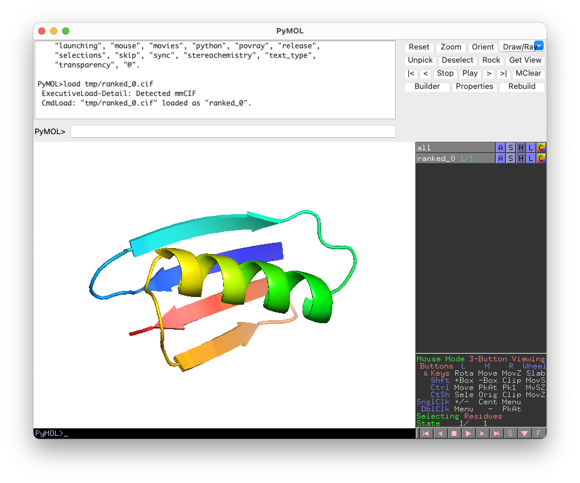
pLDDT#
Temperature factor column에 pLDDT가 들어감.
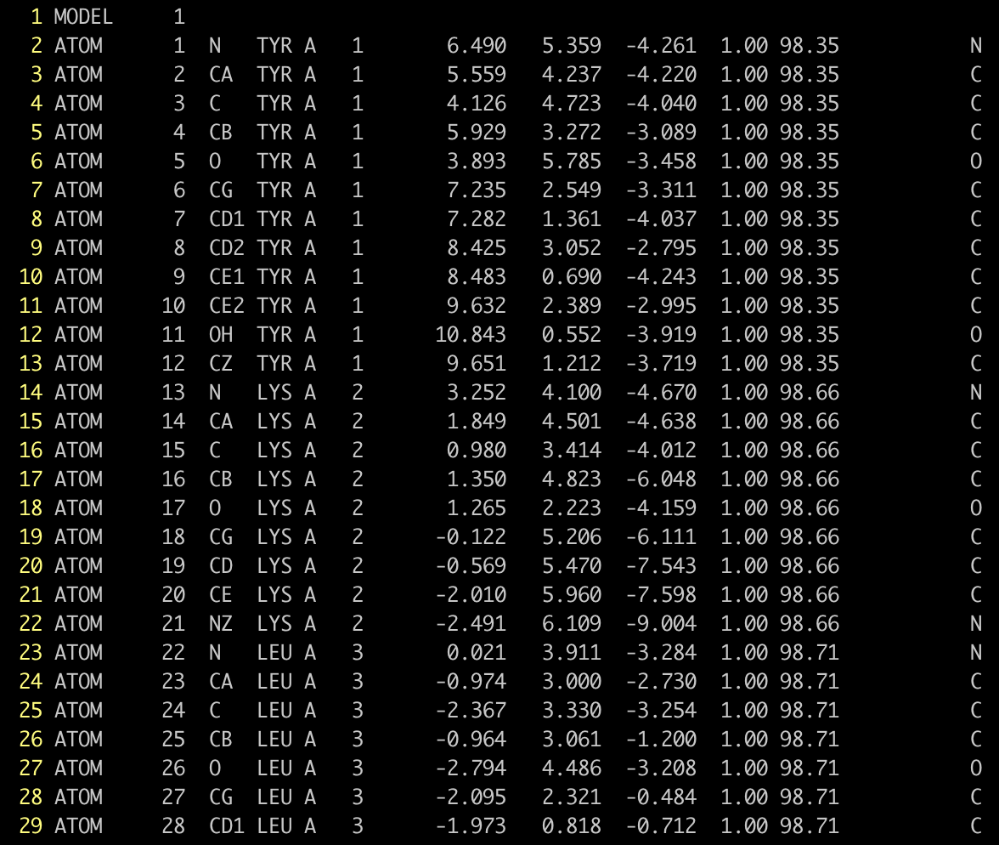
- 이는 각각의 residue의 구조가 얼마나 정확한지 0과 100 사이의 값으로 예측함.
- DeepMind에서는 다음과 같은 기준을 제시함.
- Very high : pLDDT > 90
- Confident : 90 > pLDDT > 70
- Low : 70 > pLDDT > 50
- Very low : pLDDT < 50
- PyMOL에서는
spectrum b, rainbow_rev, all, 0, 100로 시각화 할 수 있음.
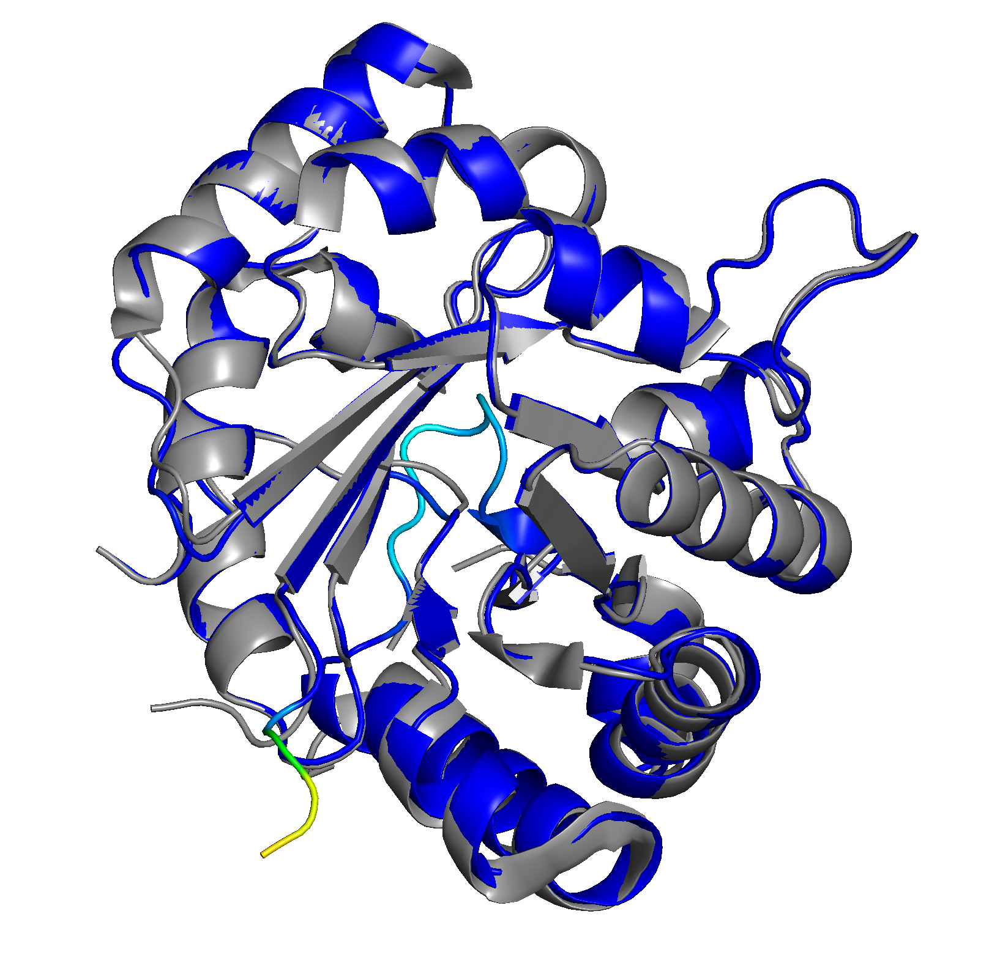
Superposition of Triosephosphate isomerase (P60174 : TPIS_HUMAN) prediction and PDB **7RDE**
ColabFold#
만약 GPU가 없거나 상황이 좋지 못하면 경량화(?)판인 ColabFold를 사용해볼 수 있다. ColabFold의 repository에 들어가면 Google Colab으로 연결되는 link가 있다.
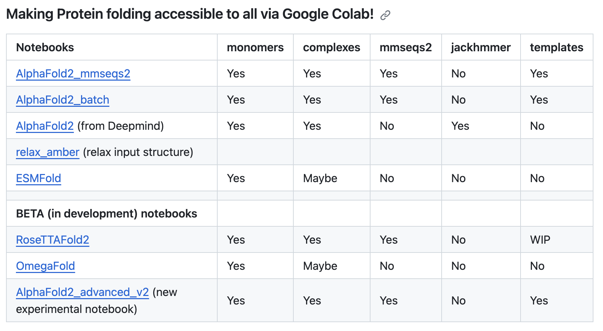
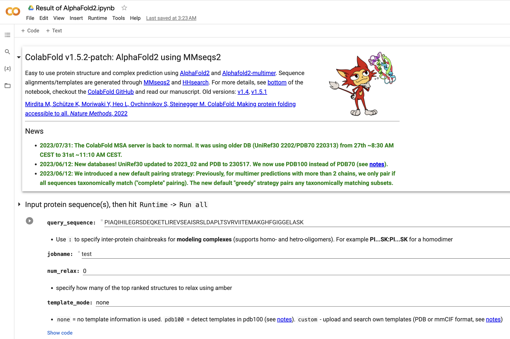